Whole brain Co-expression
For manuscript: Neurogenomic landscape of male cooperative behavior in a wild bird
Last Substantive Change May 2021
Last Knit “2022-05-30”
FALSE Allowing parallel execution with up to 7 working processes.In Horton et al (2020), they identified bunches of genes with similar expression patterns (co-expression modules) that aligned with differences among brain nuclei. The co-expression analysis here (using WGCNA), has two aims:
Replicate the results of Horton et al (2020)
To identify if there are co-expression modules that are shared amongst brain regions that are associated with our traits of interest.
This second aim is in part a complement to the whole brain PCA analysis done in the DESeq2 document.
1 Data Quality Control
This is where I originally ran the test on the effect of batch correction on the whole brain dataset (now also presented in the DESeq2 document). As identified in that document and the QC process, PFT2_POM sample was removed from this analysis.

FALSE [1] "Batch"
FALSE [1] "Status"
FALSE Flagging genes and samples with too many missing values...
FALSE ..step 1FALSE [1] TRUE
The analysis above also suggests PFT1_TNA_run2 is an outlier, based on the connectivity to the remainder of the analysis. In the analysis below that excludes the pilot variables I ran it in combinations that did and did not include this sample (not all shown here). Those analyses that did include the sample showed the same outlier status (not shown), therefore I have removed it for this version.
What do the data look like without the pilot samples (Horton et al 2020) and batch correction? Here I rerun the same analyses as above but excluding the batch correction and without the pilot samples.
1.1 Removing the pilot data


FALSE [1] "Batch"
FALSE [1] "Tissue"
FALSE [1] "Status"
The PCA plot without batch correction still shows that tissues (and different batches) are clustered more closely. Perhaps in part this is still because batches are not evenly distributed across tissues.
Going forward with the WGCNA analysis on all brain samples, I will exclude pilot data and I will not conduct batch correction. However, I will include a batch variable in the trait-module correlation matrix.
2 WGCNA Analysis
Using the dataset without the pilot data and the two outliers PFT2_POM_run1 and PFT1_TNA_run2, I will now commence the main co-expression analysis.
datExpr0<- as.data.frame(t(vsd_data))
#write.csv(datExpr0, file="wholebrain_vsd_nobatchrm.csv")
gsg = goodSamplesGenes(wgcnadata, verbose = 3)FALSE Flagging genes and samples with too many missing values...
FALSE ..step 1gsg$allOKFALSE [1] TRUE2.1 Soft Threshold Selection
powers<- c(seq(1, 11, by = 1), seq(12, 26, by = 2))
sft<- pickSoftThreshold(datExpr0, powerVector=powers, verbose=0, networkType="signed")FALSE Power SFT.R.sq slope truncated.R.sq mean.k. median.k. max.k.
FALSE 1 1 0.128 108.00 0.968 6810.00 6810.00 6870
FALSE 2 2 0.174 -9.19 0.893 3720.00 3710.00 4120
FALSE 3 3 0.111 -2.24 0.923 2170.00 2160.00 2750
FALSE 4 4 0.208 -1.89 0.945 1340.00 1320.00 2010
FALSE 5 5 0.343 -1.81 0.966 868.00 846.00 1540
FALSE 6 6 0.456 -1.74 0.978 584.00 559.00 1220
FALSE 7 7 0.558 -1.72 0.984 407.00 380.00 997
FALSE 8 8 0.641 -1.77 0.984 291.00 264.00 831
FALSE 9 9 0.695 -1.81 0.979 214.00 188.00 705
FALSE 10 10 0.734 -1.82 0.980 161.00 135.00 606
FALSE 11 11 0.757 -1.85 0.975 123.00 99.40 526
FALSE 12 12 0.784 -1.87 0.976 95.80 73.80 462
FALSE 13 14 0.821 -1.90 0.981 60.70 41.90 364
FALSE 14 16 0.845 -1.90 0.985 40.30 24.70 294
FALSE 15 18 0.859 -1.93 0.985 27.80 15.00 243
FALSE 16 20 0.873 -1.92 0.987 19.90 9.39 203
FALSE 17 22 0.870 -1.94 0.981 14.60 6.00 172
FALSE 18 24 0.876 -1.93 0.983 10.90 3.91 148
FALSE 19 26 0.883 -1.91 0.983 8.36 2.60 128par(mfrow = c(1,2))
cex1 = 0.9;
# Scale-free topology fit index as a function of the soft-thresholding power
plot(sft$fitIndices[,1], -sign(sft$fitIndices[,3])*sft$fitIndices[,2],
xlab="Soft Threshold (power)",ylab="Scale Free Topology Model Fit,signed R^2",type="n",
main = paste("Scale independence"));
text(sft$fitIndices[,1], -sign(sft$fitIndices[,3])*sft$fitIndices[,2],
labels=powers,cex=cex1,col="red");
# this line corresponds to using an R^2 cut-off of h
abline(h=0.90,col="red")
# Mean connectivity as a function of the soft-thresholding power
plot(sft$fitIndices[,1], sft$fitIndices[,5],
xlab="Soft Threshold (power)",ylab="Mean Connectivity", type="n",
main = paste("Mean connectivity"))
text(sft$fitIndices[,1], sft$fitIndices[,5], labels=powers, cex=cex1,col="red")
softPower=20The soft-threshold power I have selected here is 20, after which there is no improvement in scale free topology.
2.2 Adjacency and Topological Overlap matrices
The adjacency matrix and Topological Overlap was made on an external server to save my PC some RAMs.
softPower=20
datExpr0<- read.csv("wholebrain_vsd_nobatchrm.csv")
rownames(datExpr0)<- datExpr0$X
datExpr0$X<- NULL
adjacency<- adjacency(datExpr0, power = softPower, type="signed")
TOM<- TOMsimilarity(adjacency, TOMtype="signed")
#dissTOM<- 1-TOM
save(adjacency, TOM, file="wholebrain_network.RData")2.3 Identify co-expression modules
The first step is to identify modules of genes with similar gene expression. Basically, the tool creates a hierarchical clustering of the topological dissimilarity between genes.
#for the rmarkdown knit this data is already loaded above.
#datExpr0<- read.csv("../WGCNA_results/all_tissues/wholebrain_vsd_nobatchrm.csv")
#rownames(datExpr0)<- datExpr0$X
#datExpr0$X<- NULL
load("../WGCNA_results/all_tissues/wholebrain_network.RData")
dissTOM<- 1-TOM
geneTree= flashClust(as.dist(dissTOM), method="average")
#plot(geneTree, xlab="", sub="", main= "Gene Clustering on TOM-based dissimilarity", labels= FALSE, hang=0.04)
minModuleSize<-30
dynamicMods<-cutreeDynamic(dendro= geneTree, distM= dissTOM, deepSplit=2, pamRespectsDendro= FALSE, minClusterSize= minModuleSize)FALSE ..cutHeight not given, setting it to 0.998 ===> 99% of the (truncated) height range in dendro.
FALSE ..done.#table(dynamicMods)
dynamicColors= labels2colors(dynamicMods)
plotDendroAndColors(geneTree, dynamicColors, "Dynamic Tree Cut", dendroLabels= FALSE, hang=0.03, addGuide= TRUE, guideHang= 0.05, main= "Gene dendrogram and module colors")
Now we try to merge some of these modules that are particularly similar in expression based on a similarity threshold.
#-----Merge modules whose expression profiles are very similar
MEList= moduleEigengenes(datExpr0, colors= dynamicColors)
MEs= MEList$eigengenes
#Calculate dissimilarity of module eigenegenes
MEDiss= 1-cor(MEs)
#Cluster module eigengenes
METree= flashClust(as.dist(MEDiss), method= "average")
#plot(METree, main= "Clustering of module eigengenes", xlab= "", sub= "")
MEDissThres= 0.30 # i.e. merge modules with an r2 > 0.90. This is stringent, could relax to reduce number of modules and increase module size.
#abline(h=MEDissThres, col="red")
merge= mergeCloseModules(datExpr0, dynamicColors, cutHeight= MEDissThres, verbose =3)FALSE mergeCloseModules: Merging modules whose distance is less than 0.3
FALSE multiSetMEs: Calculating module MEs.
FALSE Working on set 1 ...
FALSE moduleEigengenes: Calculating 61 module eigengenes in given set.
FALSE multiSetMEs: Calculating module MEs.
FALSE Working on set 1 ...
FALSE moduleEigengenes: Calculating 27 module eigengenes in given set.
FALSE multiSetMEs: Calculating module MEs.
FALSE Working on set 1 ...
FALSE moduleEigengenes: Calculating 22 module eigengenes in given set.
FALSE Calculating new MEs...
FALSE multiSetMEs: Calculating module MEs.
FALSE Working on set 1 ...
FALSE moduleEigengenes: Calculating 22 module eigengenes in given set.mergedColors=merge$colors
mergedMEs= merge$newMEs
plotDendroAndColors(geneTree, cbind(dynamicColors, mergedColors), c("Dynamic Tree Cut", "Merged dynamic"), dendroLabels= FALSE, hang=0.03, addGuide= TRUE, guideHang=0.05)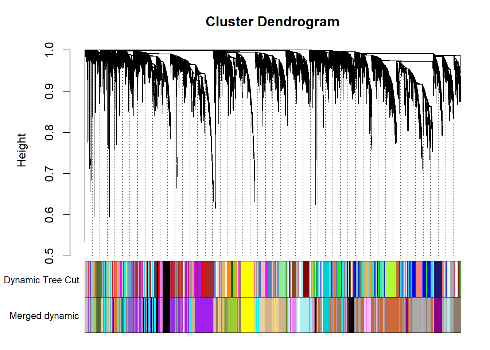
moduleColors= mergedColors
colorOrder= c("grey", standardColors(50))
moduleLabels= match(moduleColors, colorOrder)-1
MEs=mergedMEs2.4 Module-trait correlation
Correlate the eigenvector of each of the 22 co-expression modules with brain regions, individual and batch, as well as our interest variables (mean testosterone, status, and social network strength)
datTraits<- key_brain
all.equal(rownames(datExpr0), rownames(datTraits))FALSE [1] TRUEdatTraits$Batch<- ifelse(grepl("run1",datTraits$sampleID), 1,0)
datTraits$Ai<- ifelse(grepl("AI", datTraits$sampleID), 1,0)
datTraits$TnA<- ifelse(grepl("TNA", datTraits$sampleID), 1,0)
datTraits$BSTm<- ifelse(grepl("BST", datTraits$sampleID), 1,0)
datTraits$ICO<- ifelse(grepl("ICO", datTraits$sampleID), 1,0)
datTraits$GCT<- ifelse(grepl("GCT", datTraits$sampleID), 1,0)
datTraits$LS<- ifelse(grepl("LS", datTraits$sampleID), 1,0)
datTraits$POM<- ifelse(grepl("POM", datTraits$sampleID), 1,0)
datTraits$VMH<- ifelse(grepl("VMH", datTraits$sampleID), 1,0)
datTraits$AH<- ifelse(grepl("AH", datTraits$sampleID), 1,0)
datTraits$PVN<- ifelse(grepl("PVN", datTraits$sampleID), 1,0)
datTraits$Bird<- as.numeric(as.factor(datTraits$sampleID))
datTraits$Status2<- as.numeric(ifelse(datTraits$Status=="territorial",1,0))
datTraits<- subset(datTraits, select=c("Bird","Batch","Status2", "mean_T","strength.all_study","VMH","AH","PVN","POM","ICO","GCT","Ai","TnA","LS", "BSTm"))
names(datTraits)[names(datTraits)=="Status2"] <- "Status"
#-----Define numbers of genes and samples
nGenes = ncol(datExpr0);
nSamples = nrow(datExpr0);
#-----Recalculate MEs with color labels
MEs0 = moduleEigengenes(datExpr0, moduleColors)$eigengenes
MEs = orderMEs(MEs0)
#-----Correlations of genes with eigengenes
moduleGeneCor=cor(MEs,datExpr0)
moduleGenePvalue = corPvalueStudent(moduleGeneCor, nSamples);
moduleTraitCor = cor(MEs, datTraits, use = "p");
moduleTraitPvalue = corPvalueStudent(moduleTraitCor, nSamples);
#---------------------Module-trait heatmap
textMatrix = paste(signif(moduleTraitCor, 2), "\n(",
signif(moduleTraitPvalue, 1), ")", sep = "");
dim(textMatrix) = dim(moduleTraitCor)
par(mar = c(6, 10, 3, 3));
# Display the correlation values within a heatmap plot
labeledHeatmap(Matrix = moduleTraitCor,
xLabels = names(datTraits),
yLabels = names(MEs),
ySymbols = names(MEs),
colorLabels = FALSE,
colors = blueWhiteRed(50),
textMatrix = textMatrix,
setStdMargins = FALSE,
cex.text = 0.5,
zlim = c(-1,1),
main = paste("Module-trait relationships in whole brain"))
| moduleColors | Freq |
|---|---|
| bisque4 | 1143 |
| black | 891 |
| cyan | 680 |
| darkgrey | 1487 |
| darkmagenta | 509 |
| darkolivegreen | 136 |
| darkorange2 | 91 |
| darkseagreen4 | 44 |
| darkturquoise | 216 |
| grey | 275 |
| honeydew1 | 50 |
| ivory | 164 |
| mediumpurple3 | 333 |
| navajowhite2 | 808 |
| paleturquoise | 662 |
| plum1 | 488 |
| purple | 1592 |
| sienna3 | 1316 |
| tan | 1212 |
| violet | 350 |
| yellow | 628 |
| yellowgreen | 536 |
See the data portion of this repository to see the the module membership and gene-significance results.
datME<- moduleEigengenes(datExpr0,mergedColors)$eigengenes
datKME<- signedKME(datExpr0, datME, outputColumnName="MM.") #use the "signed eigennode connectivity" or module membership
MMPvalue <- as.data.frame(corPvalueStudent(as.matrix(datKME), nSamples)) # Calculate module membership P-values
datKME$gene<- rownames(datKME)
MMPvalue$gene<- rownames(MMPvalue)
genes=names(datExpr0)
geneInfo0 <- data.frame(gene=genes,moduleColor=moduleColors)
geneInfo0 <- merge(geneInfo0, genes_key, by="gene", all.x=TRUE)
color<- merge(geneInfo0, datKME, by="gene") #these are from your original WGCNA analysis
#head(color)
write.csv(as.data.frame(color), file = paste("../WGCNA_results/all_tissues/wholebrain_results_ModuleMembership.csv", sep="_"), row.names = FALSE)
MMPvalue<- merge(geneInfo0, MMPvalue, by="gene")
write.csv(MMPvalue, file=paste("../WGCNA_results/all_tissues/wholebrain_results_ModuleMembership_P-value.csv", sep="_"), row.names = FALSE)
#### gene-significance with traits of interest.
trait = as.data.frame(datTraits$Status) #change here for traits of interest
names(trait) = "status" #change here for traits of interest
modNames = substring(names(MEs), 3)
geneTraitSignificance = as.data.frame(cor(datExpr0, trait, use = "p"))
GSPvalue = as.data.frame(corPvalueStudent(as.matrix(geneTraitSignificance), nSamples))
names(geneTraitSignificance) = paste("GS.", names(trait), sep="")
names(GSPvalue) = paste("p.GS.", names(trait), sep="")
GS<- cbind(geneTraitSignificance,GSPvalue)
trait = as.data.frame(datTraits$mean_T)
names(trait)= "mean_T"
geneTraitSignificance = as.data.frame(cor(datExpr0, trait, use = "p"))
GSPvalue = as.data.frame(corPvalueStudent(as.matrix(geneTraitSignificance), nSamples))
names(geneTraitSignificance) = paste("GS.", names(trait), sep="")
names(GSPvalue) = paste("p.GS.", names(trait), sep="")
GS2<- cbind(geneTraitSignificance,GSPvalue)
trait = as.data.frame(datTraits$strength.all_study)
names(trait)= "strength"
geneTraitSignificance = as.data.frame(cor(datExpr0, trait, use = "p"))
GSPvalue = as.data.frame(corPvalueStudent(as.matrix(geneTraitSignificance), nSamples))
names(geneTraitSignificance) = paste("GS.", names(trait), sep="")
names(GSPvalue) = paste("p.GS.", names(trait), sep="")
GS3<- cbind(geneTraitSignificance,GSPvalue)
GS$gene<- rownames(GS)
GS<- cbind(GS,GS2, GS3)
GS<- merge(geneInfo0,GS, by="gene")
write.csv(GS, file="../WGCNA_results/all_tissues/wholebrain_results_GeneSignificance.csv", row.names = FALSE)2.5 intermodule correlations
Given the network type used, all genes in a module can only go in the same direction. This means that another module may represent genes that are downregulated by the upregulation of genes in another module (or vice-versa).
# Specify colors
colz<- gsub("ME","",colnames(MEs))
names(colz)<- colnames(MEs)
ann_colors = list(module=colz)
annotation_col<- data.frame(row.names=colnames(MEs), module=colnames(MEs))
correlation<- cor(MEs)
pheatmap(correlation, annotation_col = annotation_col, annotation_colors = ann_colors, annotation_legend=FALSE, legend_breaks = c(-1,-0.5,0,0.5, 1,1),
main="module eigengene correlation in whole brain", legend_labels = c("-1", "-0.5", "0", "0.5","1","correlation\n\n"))
2.6 Interesting Modules
There are three modules that appear to be associated with our traits of interest. Let’s explore these further. Because the module-trait correlation procedure cannot account for tissues taken from the same individual, I will test to see if these relationships still hold when accounting for this in a linear mixed model.
library(lmerTest)
library(nlme)
#merge module eigengenes with trait matrix.
mes<- MEs
mes$sampleID <- rownames(mes)
mes<- merge(key_brain, mes, by="sampleID")
mes$Tissue<- as.factor(mes$Tissue)2.6.1 darkturquoise module
This module is potentially associated with social status.
m1 <- lme(MEdarkturquoise~Batch + Tissue*Status,random=~ 1|Harvest_ID,data=mes)
anova(m1)FALSE numDF denDF F-value p-value
FALSE (Intercept) 1 84 0.000295 0.9863
FALSE Batch 1 84 14.471512 0.0003
FALSE Tissue 9 84 4.324336 0.0001
FALSE Status 1 10 4.864112 0.0520
FALSE Tissue:Status 9 84 1.250563 0.2762### Diagnostic plot
plot(m1)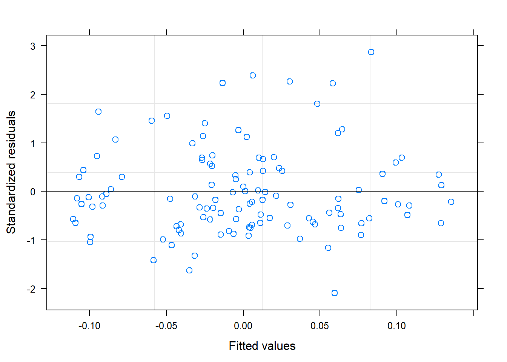
#plot the module eigengene against our traits of interest
ggplot() + geom_point(data=mes, aes(x=Tissue, y=MEdarkturquoise, color=status, shape=Batch), position=dodge) + geom_boxplot(data=mes, aes(x=Tissue, y=MEdarkturquoise, color=status), fill=NA, outlier.colour = NA) + peri_theme + labs(title="darkturquoise module eigengene vs status")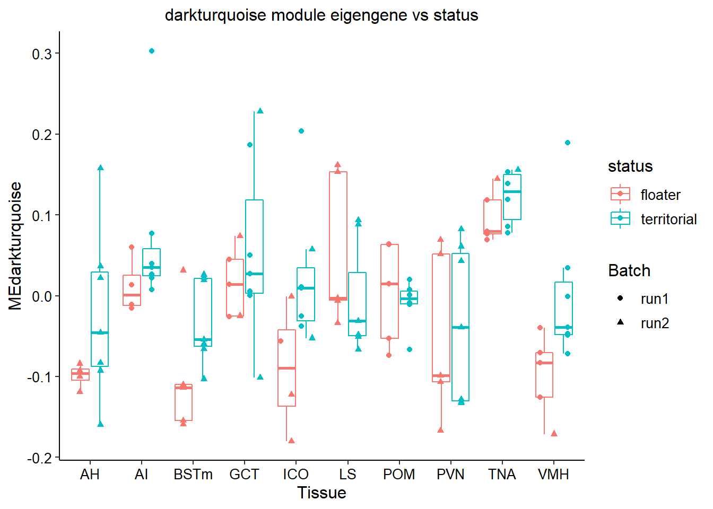
Not very convinced with the relationship with Status when accounting for batch and individual ID, though some tissues appear to be stronger than others - e.g. VMH and BSTm.
Let’s now plot the top hub gene. This gene is the one with the highest module membership score. UBA52 has a module membership score ~0.9
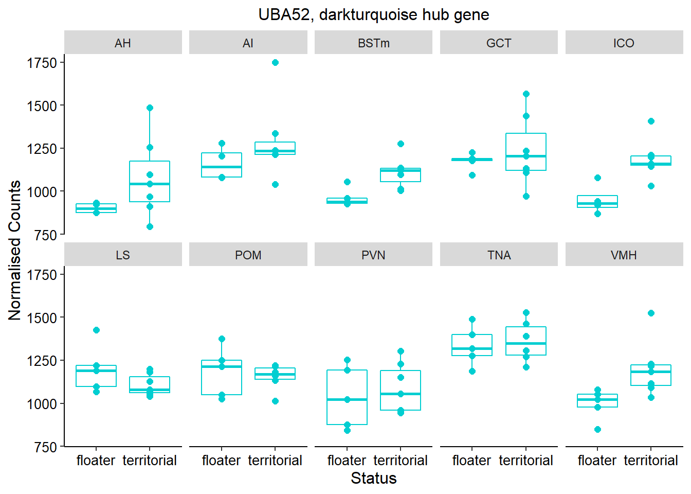
2.6.2 paleturquoise
This module is potentially associated with status.
FALSE numDF denDF F-value p-value
FALSE (Intercept) 1 84 0.00000 1.0000
FALSE Batch 1 84 69.76363 <.0001
FALSE Tissue 9 84 2.04425 0.0441
FALSE Status 1 10 6.13781 0.0327
FALSE Tissue:Status 9 84 0.91679 0.5149

The top hub gene for this module is KCTD5 with a MM score of ~0.95 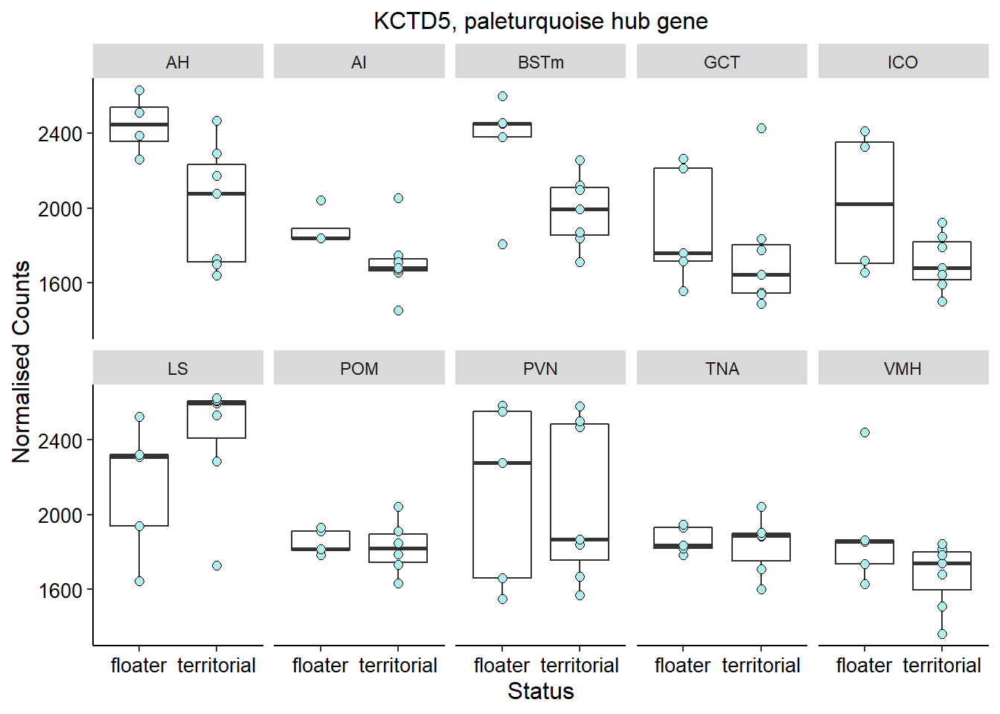
whichModule="paleturquoise"
nTop<-30 # I use all the genes in the module, but could limit to top n genes based on MM
#extract the expression of the top 30 genes and sort them based on module membership.
modcol=paste("MM.",whichModule,sep="")
module_genes<- color[color$moduleColor==whichModule,]
verboseScatterplot(abs(module_genes[, modcol]),
abs(GS[GS$moduleColor==whichModule, "GS.status"]),
xlab = paste("Module Membership in", whichModule, "module"),
ylab = "Gene significance for status",
main = paste("Module membership vs. gene significance\n"),
cex.main = 1.2, cex.lab = 1.2, cex.axis = 1.2, col = whichModule)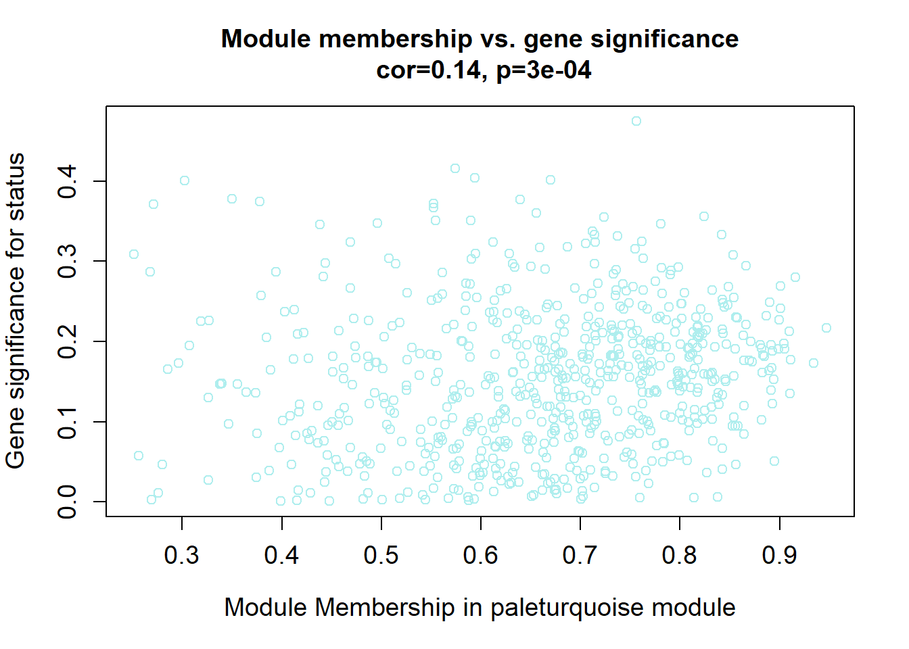
sorted=color$gene[order(color[,modcol],decreasing=T)]
hubs=sorted[1:nTop]
hubs=datExpr0[,match(hubs, colnames(datExpr0))]
### Sort individual data based on the trait value
expDesign<- data.frame(row.names=rownames(key_brain), mean_T=key_brain[,"mean_T"], Status=key_brain[,"Status"])
expDesign<- expDesign[order(expDesign$Status),]
ann_cols<- list(Status=c(territorial="#414042",floater="#E54849"))
hubs<- hubs[match(rownames(expDesign), rownames(hubs)), ]
#original heatmap
pheatmap(hubs,scale="column", cluster_rows = TRUE,cluster_cols = FALSE,show_rownames = TRUE, show_colnames = TRUE,border_color=NA, main=paste(whichModule,"module in brain"), annotation_row=expDesign, annotation_colors=ann_cols)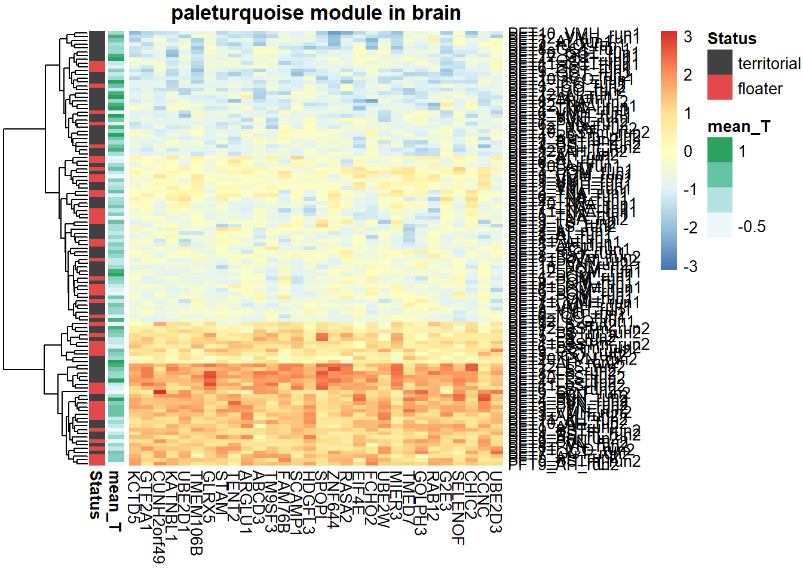
| ID | Description | GeneRatio | BgRatio | pvalue | p.adjust | qvalue | geneID | Count |
|---|---|---|---|---|---|---|---|---|
| GO:0036444 | calcium import into the mitochondrion | 4/571 | 10/11465 | 0.0010049 | 0.6074856 | 0.6007034 | MAIP1/MCUR1/MICU2/MICU3 | 4 |
| GO:0043484 | regulation of RNA splicing | 7/571 | 36/11465 | 0.0017305 | 0.6074856 | 0.6007034 | CELF1/LOC114001870/MBNL2/PTBP2/RBM12/RBM12B/TRA2B | 7 |
| GO:0030148 | sphingolipid biosynthetic process | 8/571 | 48/11465 | 0.0023291 | 0.6074856 | 0.6007034 | ACER3/ELOVL4/HACD2/KDSR/SGMS2/SGPP1/SPTLC1/VAPA | 8 |
| GO:0006376 | mRNA splice site selection | 5/571 | 20/11465 | 0.0025007 | 0.6074856 | 0.6007034 | CELF1/LOC113985802/LOC113985815/PTBP2/SRSF1 | 5 |
| GO:0044257 | cellular protein catabolic process | 4/571 | 13/11465 | 0.0030357 | 0.6074856 | 0.6007034 | CLN8/IDE/RAB12/RIPK1 | 4 |
| GO:0043161 | proteasome-mediated ubiquitin-dependent protein catabolic process | 16/571 | 149/11465 | 0.0030399 | 0.6074856 | 0.6007034 | ATXN3/CLOCK/GID8/KCTD5/NEDD4/NHLRC1/NHLRC3/PPP2R5C/PSMD10/RAD23B/RNF4/SPOPL/TBL1XR1/UBE2D3/UBE2W/USP44 | 16 |
| GO:0006851 | mitochondrial calcium ion transmembrane transport | 5/571 | 23/11465 | 0.0047967 | 0.6074856 | 0.6007034 | LETM1/MAIP1/MCUR1/MICU2/MICU3 | 5 |
| GO:0031398 | positive regulation of protein ubiquitination | 9/571 | 66/11465 | 0.0051804 | 0.6074856 | 0.6007034 | BCL10/CHFR/DERL1/MAPK9/NDFIP2/NHLRC1/PSMD10/TRAF6/UBE2D1 | 9 |
| GO:0002756 | MyD88-independent toll-like receptor signaling pathway | 4/571 | 15/11465 | 0.0053529 | 0.6074856 | 0.6007034 | RIPK1/TLR3/UBE2D1/UBE2D3 | 4 |
| GO:0051560 | mitochondrial calcium ion homeostasis | 4/571 | 16/11465 | 0.0068600 | 0.6074856 | 0.6007034 | LETM1/MAIP1/MICU2/MICU3 | 4 |
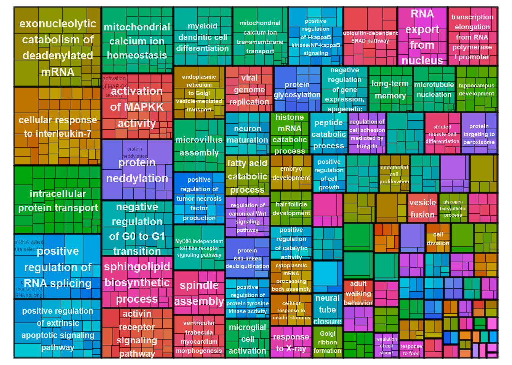
2.6.3 honeydew1 module
This module is potentially associated with social network strength.
FALSE numDF denDF F-value p-value
FALSE (Intercept) 1 84 0.00693 0.9339
FALSE Batch 1 84 24.58860 <.0001
FALSE Tissue 9 84 45.74681 <.0001
FALSE strength.all_study 1 10 1.28478 0.2835
FALSE Tissue:strength.all_study 9 84 0.75868 0.6544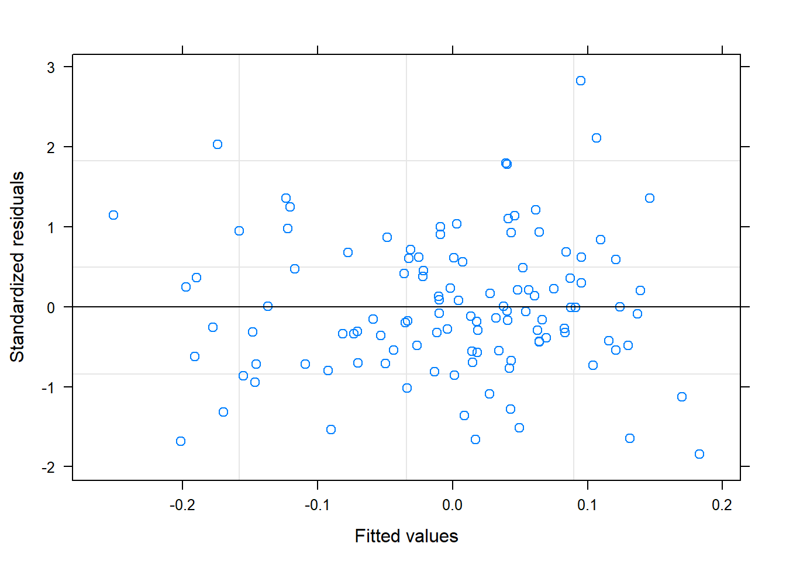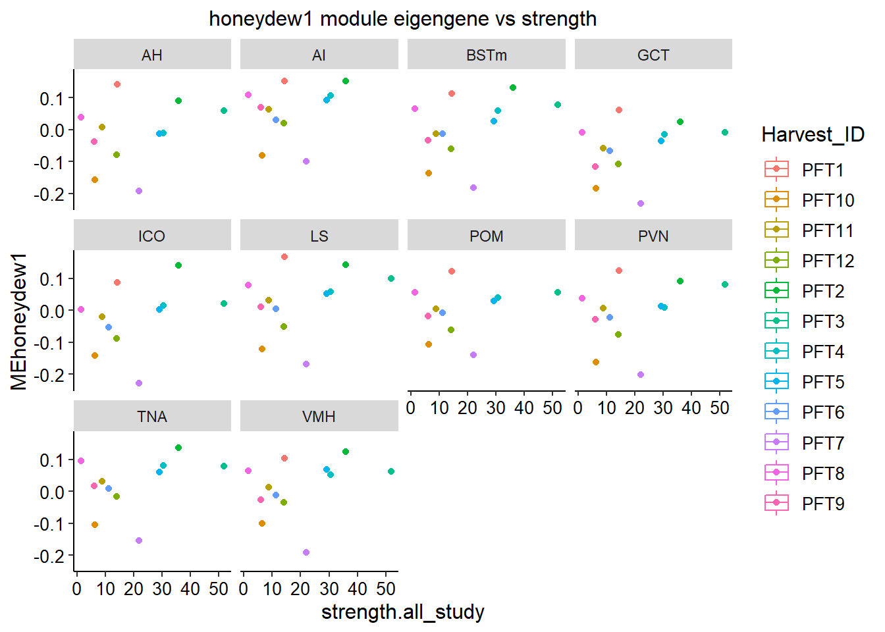
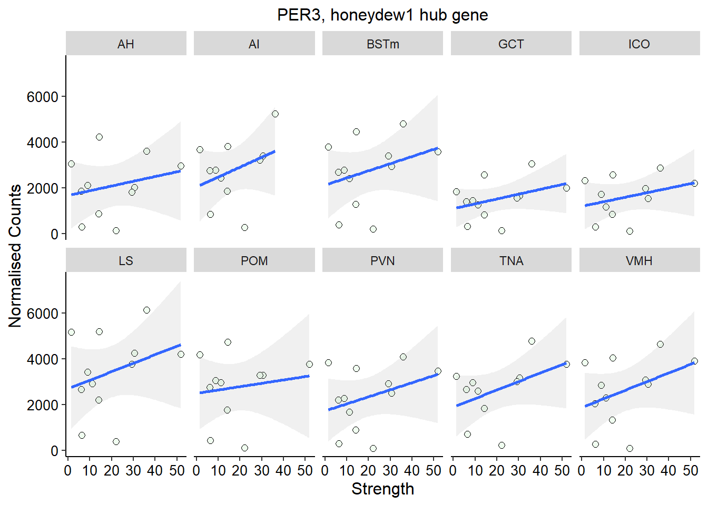
Not significant after controlling for batch, tissue and indivdual as a random effect.
2.6.4 darkorange2
FALSE numDF denDF F-value p-value
FALSE (Intercept) 1 84 0.00718 0.9327
FALSE Batch 1 84 38.02610 <.0001
FALSE Tissue 9 84 60.78957 <.0001
FALSE strength.all_study 1 10 2.17888 0.1707
FALSE Tissue:strength.all_study 9 84 2.24083 0.0269 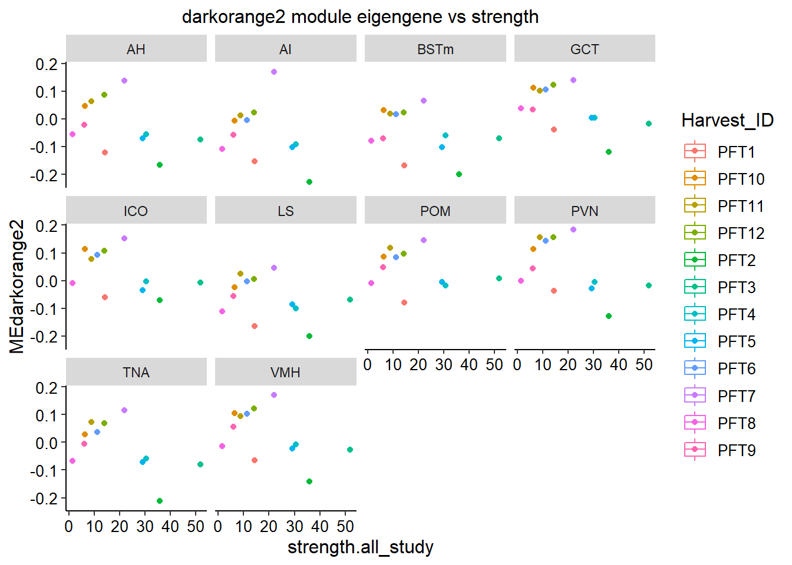
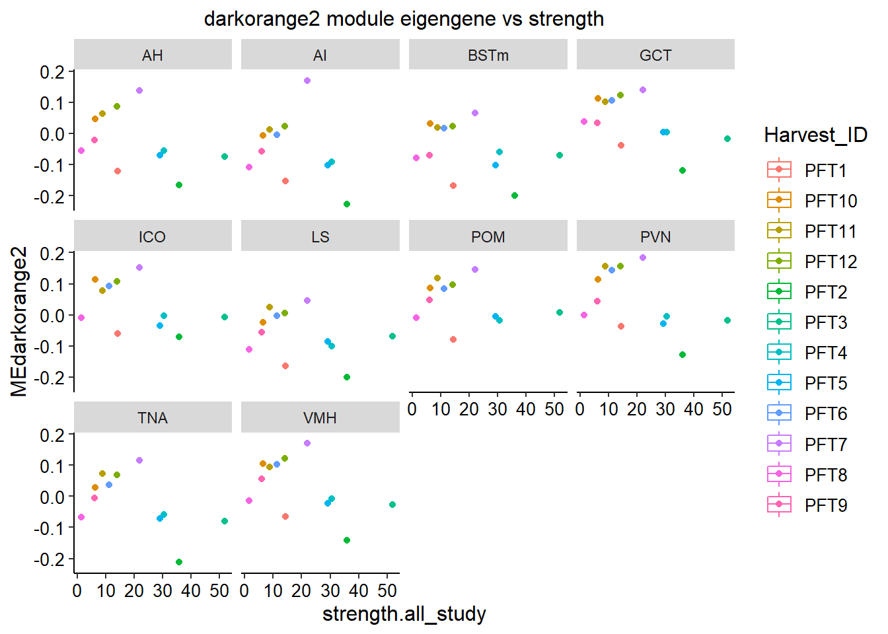